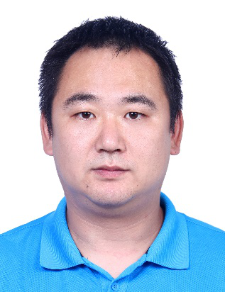
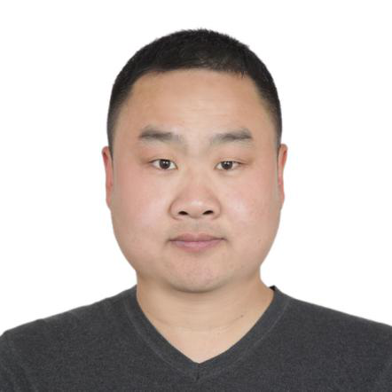
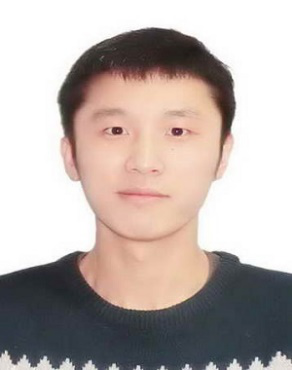
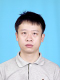
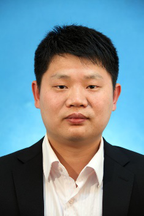

论坛组委会（排名不分先后顺序）
邢朝平 冯荣权 许春香 张 磊 林东岱 温伟强 李丽香
王丽萍 徐秋亮 王华雄 陈利群 唐 强 林 聪 高 飞
论坛组织与筹备
蒋林智（University of Surrey）
会议举办时间：2021年01月02日-01月03日
冬令营班时间：2021年01月20日-02月04日
会议举办地点：腾讯云会议室。会议采用网络视频会议形式（中国-腾讯会议，海外- VooV Meeting）
会议合作联系：蒋林智（University of Surrey），linzjiang@hotmail.com
论坛组委会（排名不分先后顺序）
邢朝平 冯荣权 许春香 张 磊 林东岱 温伟强 李丽香
王丽萍 徐秋亮 王华雄 陈利群 唐 强 林 聪 高 飞
论坛组织与筹备
蒋林智（University of Surrey）
会议举办时间：2021年01月02日-01月03日
冬令营班时间：2021年01月20日-02月04日
会议举办地点：腾讯云会议室。会议采用网络视频会议形式（中国-腾讯会议，海外- VooV Meeting）
会议合作联系：蒋林智（University of Surrey），linzjiang@hotmail.com
论坛组委会（排名不分先后顺序）
邢朝平 冯荣权 许春香 张 磊 林东岱 温伟强 李丽香
王丽萍 徐秋亮 王华雄 陈利群 唐 强 林 聪 高 飞
论坛组织与筹备
蒋林智（University of Surrey）
会议举办时间：2021年01月02日-01月03日
冬令营班时间：2021年01月20日-02月04日
会议举办地点：腾讯云会议室。会议采用网络视频会议形式（中国-腾讯会议，海外- VooV Meeting）
会议合作联系：蒋林智（University of Surrey），linzjiang@hotmail.com
特邀报告及特邀报告人简介
潘彦斌 副研究员 数学与系统科学研究
Talk Title：A Uniform Formal Framework for Lattice-Based Cryptosystems
Abstract：In this talk, we will try to review the state-of-the-art of the algorithms for solving Euclidean lattice problems underlying cryptography. In more details, this talk contains two parts.

潘彦斌，中国科学院数学与系统科学研究院副研究员，博士生导师。2005年6月获南京大学学士学位，2010年7月获中国科学院数学与系统科学研究院博士学位。2018年至2019年任美国俄克拉荷马大学访问学者。研究兴趣主要包括格算法与格密码的安全性分析，计算数论等。目前在IEEE Trans. on Information Theory， CRYPTO, PKC, ISSAC等期刊会议发表学术论文多篇；曾担任ISC，Africacrypt等国际会议程序委员会委员，《密码学报》编委；主持国家自然科学基金项目2项，参与国家重点研发计划，国家自然科学基金重点项目等多项。
Dr. Wen Weiqiang Université Renens 1
Talk Title：On algorithms for solving Euclidean lattice problems in cryptography
Abstract：In this talk, we try to present a uniform formal framework for some popular lattice-based cryptosystems including the LP-type encryption schemes, the reconciliation-based key exchange schemes and some lattice-based signature schemes, to reveal the connections between them.
In the first part, we will focus on the lattice problems such as approximate Shortest Vector Problem (approx-SVP) and the lattice reduction algorithms as the best known solving algorithms so far. Specifically, I will present an improved enumeration-based lattice reduction algorithm, which is shown to be relevant to cryptanalysis. When quantum algorithms are concerned, the lattice reduction is then equipped with a quantum version of the underlying SVP solver. However, the main lattice reduction process is still left to be classical. In the second part, we will instead consider a quantum problem that is computationally equivalent to approx-SVP. By directly solving a quantum problem, we can expect to have a more powerful use of the quantum computation. Specifically, we will recall a connection between Learning With Error (LWE) problem and the Dihedral Coset Problem (DCP) by Regev in 2002. Then I will present an extended version of DCP (EDCP) and review a computational equivalence between LWE and it. However, the current quantum algorithms for solving approx-SVP via solving EDCP is not better than the one by lattice reduction yet.

WEN Weiqiang, currently a Post-Doc in Université Renens 1, under supervison of Pierre-Alain Fouque and Adeline Roux-Langlois. Previously he finished a PhD in Computer Science at ENS de Lyon under supervison of Damien Stehlé, on hardness of lattice problems. Before that, he got a Master in computer science at SCNU under the supervison of Libin Wang. His research interests include provable security and solving algorithms of lattice problems. His publications appear in conferences such as Crypto, Asiacrypt, PKC and ICALP.
路献辉副研究员 信息工程研究所
报告题目: 全同态加密算法设计与标准化
报告摘要: 全同态加密算法（FHE）是解决云计算、大数据、人工智能等应用中数据隐私保护问题的重要工具之一。从2009年设计思想取得突破以来，FHE经历了快速的发展，在设计技术和优化实现方面取得了巨大的进步，目前在一些简单的应用中其计算性能已经达到实用化需求，其工业标准化工作已经开始。本报告介绍FHE的设计思想、实用化方案、标准化进展，以及目前面临的主要技术挑战。

路献辉，2009年于西南交通大学获得信息安全专业博士学位。2009-2012年进入中国科学院研究生院信息安全国家重点实验室从事博士后研究。2012年起进入中国科学院信息工程研究所工作，主要研究兴趣包括可证明安全理论、抗量子公钥密码算法设计、全同态密码算法设计，有多篇研究成果发表于在欧密、亚密、PKC等国际顶级密码学会议。带领团队设计了基于格的后量子公钥密码算法LAC参加美国NIST组织的后量子密码算法标准征集工作，是进入第二轮的26个候选算法之一。作为中国专家代表参加了国际标准化组织ISO的后量子密码算法项目，担任格密码章节的联合编辑。作为ISO/IEC全同态密码算法标准项目的联合发起人，负责全同态密码算法的标准化推进工作。
王文浩副研究员 信息工程研究所
报告题目: 可信硬件与密码学的一些思考
报告摘要: 目前隐私计算存在两条路径：可信硬件借助芯片中的可信执行环境（TEE）技术，例如Intel SGX等，提供对数据和计算的安全隔离和远程认证；密码学技术，例如（全）同态加密、多方安全计算等，基于困难问题和严格的数学证明提供安全保证。在这个报告中将分享二者各自的优势和问题，以及它们的融合、发展的一些探索。

王文浩，副研究员，硕士生导师，2015年博士毕业于中国科学院信息工程研究所，2016年至2018年美国印第安纳大学博士后，主要研究方向为系统安全、云安全、隐私计算、可信执行环境技术等研究，主要研究成果发表在IEEE S&P（2018，2020，2021）、ACM CCS（2017）、EUROCRYPT（2018）、CHES（2020）、ACSAC（2018）等知名国际会议等，担任网络与系统安全顶级会议ACM CCS 2019程序委员会委员，获评2018年度ACM中国新星奖提名奖和2018年度ACM中国SIGSAC分会新星奖。
张江副研究员 密码科学技术国家重点实验室
报告题目: 基于格的签名算法
报告摘要: In this talk, we focus on lattice-based signatures. After a brief introduction, we will talk about the technologies and the current state of efficient lattice-based signatures in the random oracle model. Finally, we will give a short conclusion.

张江，密码科学技术国家重点实验室副研究员、副主任，中国科协“青年人才托举工程”和“国家优秀青年基金”获得者，主要从事公钥密码可证明安全理论、抗量子密码和安全多方计算协议研究，在密码学和信息安全顶级国际会议CRYPTO、EUROCRYPT、AISACRYPT和ACM CCS等发表了30余篇论文。受邀在中国密码学会2016、2019年会等国内外学术会议上做特邀报告，担任AISACRYPT等国际会议程序委员和《密码学报》编委，获得中国密码学会密码创新奖一等奖，省部级科技进步奖一等奖，省部级自然科学奖一等奖，全国密码算法设计竞赛一等奖2项，中国科学院优秀博士学位论文和中国密码学会优秀博士学位论文等。
Dr. Huijing Gong University of Maryland
Talk Title: LWE with Side Information: Attacks and Concrete Security Estimation
Abstract: We propose a framework for cryptanalysis of lattice-based schemes, when side information---in the form of hints--- about the secret and/or error is available. Our framework generalizes the so-called primal lattice reduction attack, and allows the progressive integration of hints before running a final lattice reduction step. Our techniques for integrating hints include sparsifying the lattice, projecting onto and intersecting with hyperplanes, and/or altering the distribution of the secret vector. Our main contribution is to propose a toolbox and a methodology to integrate such hints into lattice reduction attacks and to predict the performance of those lattice attacks with side information.
While initially designed for side-channel information, our framework can also be used in other cases: exploiting decryption failures, or simply exploiting constraints imposed by certain schemes (LAC, Round5, NTRU).We implement a Sage 9.0 toolkit to actually mount such attacks with hints when computationally feasible, and to predict their performances on larger instances. We provide several end-to-end application examples, such as an improvement of a single trace attack on Frodo by Bos et al (SAC 2018). In particular, our work can estimate security loss even given very little side information, leading to a smooth measurement/computation trade-off for side-channel attacks.
It is a joint work with Dana Dachman-Soled, Léo Ducas and Mélissa Rossi, published in the Crypto 2020. The ePrint version can be found in https://eprint.iacr.org/2020/292.pdf.

Huijing Gong is a Ph.D. candidate in Computer Science at the University of Maryland, advised by Prof. Dana Dachman-Soled. Her research interests lie primarily in the area of cryptography. In particular, she has worked on designing and cryptanalyzing lattice-based cryptography.
Dr. Linzhi Jiang University of Surrey
报告题目: Lattice-based Crypto Implementation Development
报告摘要：Introduce lattice-based crypto implementation.

Linzhi Jiang received his Ph.D. from University of Electronic Science and Technology of China and Intel Scholar Fellowship in 2015. He works as Researcher in China, and is the Research Fellow at University of Surrey now. His research interests include Lattice-based Cryptography, Fully Homomorphic Encryption, IoT Security, Trusted Computing, QR Cryptography, Big Data and Cloud Computing Security. He has published about 15 papers in Top IEEE Journals and Conference and is PI about 8 funds including NFSC in China. Dr. Linzhi Jiang is the initiator and organizer of several International Conferences. He also is the PC Member about 10 International Conference and reviewers 16 Top IEEE Journals and Conferences.
张煌博士 长沙理工大学
报告题目: 基于理想格的匿名密码货币
报告摘要: 以区块链为基础的密码货币正值研究与投资的热点时期，致使围绕其匿名性的讨论层出不穷。面对比特币匿名性上的弱点，其中一种为人认可的改进势头即是以自带匿名属性的（可链接）环签名替换初始的标准数字签名方案。不过，这不可避免地需要付出额外的存储和计算代价，因而尽可能短的签名长度是研究与实践共同追逐的目标。另一方面，从长远发展的角度看，密码货币系统理应能够避免量子算法的威胁，而格密码正是后量子密码候选标准中的一种。由此，在上述动机的驱使以及前人工作的启发下，我们率先提出了以理想格构建的短（可链接）环签名方案，并以此为基础给出了无中心的匿名密码货币系统。

张煌，博士，长沙理工大学计算机与通信工程学院博士，主要从事格密码的研究。2014年获得中山大学软件工程硕士学位，2019年获得中山大学计算机科学与技术博士学位。博士期间，数篇文章发表在FC，IET Information Security，Science China等密码与信息安全会议和期刊上。
Dr. Cong Ling Imperial College
报告题目: Discrete Gaussian sampling over the integers
报告摘要：Discrete Gaussian sampling over the integers.

Cong Ling is currently a Reader in the Electrical and Electronic Engineering Department at Imperial College London. He is a member of the Academic Centre of Excellence in Cyber Security Research at Imperial College and an affiliated member of the Institute of Security Science and Technology of Imperial College.
张磊研究员 华东师范大学
报告题目: 浅谈联邦学习中的攻击与挑战
报告摘要: 联邦学习使多个参与方在保护数据隐私、满足合法合规要求的前提下进行联合学习，解决数据孤岛问题。报告介绍联邦学习的发展背景，针对联邦学习的攻击和安全挑战，并从密码学角度介绍相关的安全技术。

张磊，研究员，博导，华东师范大学密码与网络安全系副主任；研究领域包括车载网安全、密码学、云计算安全与隐私保护；发表论文80余篇，包括IEEE TIFS、IEEE TC、IEEE TDSC、IEEE TITS、IEEE-ACM ToN、ESORICS、ASIACRYPT等国际期刊会议；担任了十多个国际期刊编委或客座编辑，60多个国际会议程序委员会委员；主持/参与国家自然科学基金重点、面上项目等10余项；获省部级二等奖与三等奖各1项；担任上海市计算机学会信息安全专委会副主任，中国密码学会青年工作委员会委员等。
Dr. Xiaoshu Xiang University of Surrey
报告题目：基于需求覆盖多样性求解动态车辆路径问题
报告摘要: 动态车辆路径问题（DVRP）由于在社会生活、工业生产中的广泛存在而备受研究者关注。本文提出了基于需求覆盖多样性的进化算法ACO-CD解决动态车辆路径问题。尽管基于多样性的方法是解决DVRP的经典方法之一，现有的基于多样性的方法却难以应对远离规划路径的新客户，而这类新客户往往会导致执行规划路径的行驶成本骤增。因此，本文提出需求覆盖多样性自适应方法来保持被路径覆盖客户的多样性，以便有效应对远离规划路径的新客户。在27个DVRP测试用例上的实验结果表明，使用需求覆盖多样性自适应方法解决DVRP能有效削减车辆的行驶成本，且ACO-CD相比现有的DVRP求解方法在解质量上也展现出了一定优势。

Xiaoshu Xiang, University of Surrey.
Dr. Jia Liu University of Surrey
Talk Title：Adversarial Examples: Attacks and Defenses for Deep Learning
Abstract: Deep neural networks (DNNs) have been successfully used to deal with various computer vision tasks, such as image recognition, object detection and segmentation. However, it is recognized that neural networks are vulnerable to adversarial attacks. Such vulnerability must be fixed before deep learning models can be adopted in safety-critical applications. To address this issue, various methods have been proposed to design network architectures that are robust to adversarial attacks. The popular ways to improve the adversarial robustness of deep learning models include adversarial training, randomization-based schemes, denoising methods, provable defenses, and some other new defenses. Several open problems and challenges in this area will also be discussed to provide a useful research guideline to boost the development of this critical area.

Jia Liu received the B.Sc. degree in 2015 from Shenyang University of Technology, Shenyang, China, and the M.Sc. degree in 2018 from Shenzhen University, Shenzhen, China. She was the Outstanding Student of Guangdong Province in 2018. She is currently pursuing her Ph.D. degree in Department of Computer Science, University of Surrey, UK. Her current research interests include robust deep learning, neural architecture search, evolutionary computation, and computer vision. She has published over 13 papers in this field and has been severing as reviewers for international journals and conferences, such as IEEE Transactions on Evolutionary Computation (TEC), IEEE Congress on Evolutionary Computation (CEC), and International Conference on Intelligent Computing (ICIC). She also won the Special Session Best Paper Award in Seventh International Conference on Swarm Intelligence.
| 时间(北京) | 会议报告 | ||
| 01月02日（会议地点：网络视频会议室） | |||
|---|---|---|---|
| 8:20-8:30 | 会议主席致辞 | ||
| 时间 | 报告 | 报告人 | 主持人 |
| 08:30-09:10 | 基于格的签名算法 | 张 江 | 路献辉 |
| 09:10-09:50 | LWE with Side Information: Attacks and Concrete Security Estimation | Huijing Gong | |
| 09:50-10:00 | 茶歇 | ||
| 10:00-10:40 | Lattice-based Crypto Implementation | 蒋林智 | 张 煌 |
| 午餐（自理） | |||
| 14:00-14:40 | 可信硬件与密码学的一些思考 | 王文浩 | 李丽香 |
| 14:40-15:20 | 基于需求覆盖多样性求解动态车辆路径问题 | Xiaoshu Xiang | |
| 15:20-15:30 | 茶歇 | ||
| 15:30-16:10 | On algorithms for solving Euclidean lattice problems in cryptography | Weiqiang Wen | 蒋林智 |
| 16:10-16:50 | Discrete Gaussian Sampling over the Integers | Cong Ling | |
| 16:50-17:30 | Adversarial Examples: Attacks and Defenses for Deep Learning | Jia Liu | |
| 01月03日（会议地点：网络视频会议室） | |||
| 时间 | 报告 | 报告人 | 主持人 |
| 08:30-09:10 | 全同态加密算法设计与标准化 | 路献辉 | 张 磊 |
| 09:10-09:50 | 基于理想格的匿名密码货币 | 张 煌 | |
| 09:50-10:00 | 茶歇 | ||
| 10:00-10:40 | A Uniform Formal Framework for Lattice-Based Cryptosystems | 潘彦斌 | 蒋林智 |
| 10:40-11:20 | 浅谈联邦学习中的攻击与挑战 | 张 磊 | |
| 午餐（自理） | |||
全同态加密应用与实现冬令营班课程时间安排表
全同态加密应用与实现冬令营班特邀University of Surrey蒋林智研究员担任主讲。按照课程的要求，本课程一共安排40个授课学时，其中全同态加密算法分析-I（简称“算法分析-I”）为8个课时，全同态加密算法分析-II（简称“算法分析-II”）为8个课时，全同态加密编程库-I（简称“编程库-I”）为8个课时，全同态加密编程库-II（简称“编程库-II”）为8个课时，全同态加密算法编程实现（简称“编程实现”）为8个课时。由于特殊情况，本次课程使用在线课程形式。在线授课使用腾讯会议系统，请参加本课程的学员安装腾讯会议软件。详细的课程安排时间表如下，时间表中的标注时间为有本课程的日期/时间段/授课课程，请各位学员准时参加。
| 北京时间\日期 | 1.20 | 1.21 | 1.22 | 1.23 | 1.24 | 1.25 | 1.26 |
| 周三 | 周四 | 周五 | 周六 | 周日 | 周一 | 周二 | |
| 19:30-21:30 | 算法分析-I | 算法分析-I | 算法分析-I | 算法分析-II | 算法分析-II | 算法分析-II | 编程库-I |
| 时间\日期 | 1.27 | 1.28 | 1.29 | 1.30 | 1.31 | 2.1 | 2.2 |
| 周三 | 周四 | 周五 | 周六 | 周日 | 周一 | 周二 | |
| 19:30-21:30 | 编程库-I | 编程库-I | 编程库-II | 编程库-II | 编程库-II | 编程库-II | 编程实现 |
| 时间\日期 | 2.3 | 2.4 | |||||
| 周三 | 周四 | ||||||
| 19:30-21:30 | 编程实现 | 编程实现 |
 Copyright©2016 DFSC Center
Copyright©2016 DFSC Center